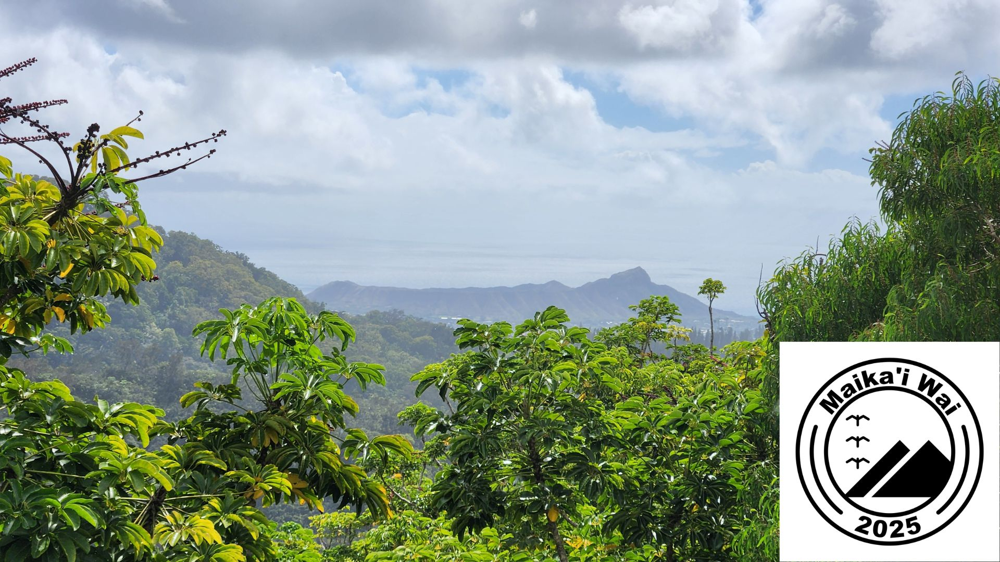

Maikaʻi Wai
ʻAhahui o Māla Lanakila


Ka ʻIke (Vision)
ʻO Maikaʻi Wai – ʻAhahui o Māla Lanakila ka ʻahahui e hoʻohui ana i ka poʻe nona ka ʻāina a me ka poʻe mahiʻai akamai ma lalo o ke aloha ʻāina.
Maikaʻi Wai – Guilded Fellowship of Māla Lanakila brings landowners and skilled cultivators together in a guild grounded in aloha ʻāina.
Inā lilo ʻoe i Hoa ʻāina, e hāʻawi ʻoe i ka ʻae no kou ʻāina, a e ʻike ʻoe i kona ulu ʻana i homestead Hawaiʻi e ola ana.
As a Guild Member, you license your land and watch it become a living Hawaiian homestead.
He māla lanakila e hua ai ka ʻai no kou papaʻaina, i hoʻonui ʻia me nā mea kanu ʻōiwi, ka lepo hoʻomomona, a me ka mālama kahiko.
It is a productive garden that grows food for your table, enriched with native plants, lepo hoʻomomona, and traditional care.
ʻO nā Hoa hana, mai ka haumāna a hiki i ke alakaʻi, ka poʻe e hana lima ana me ke akamai ma ka mahiʻai, ka wai, a me nā hana moʻomeheu.
Guild Fellows, from apprentices to leads, are the ones who do the hands-on work with skill in gardening, water systems, and cultural practices.
Ma o ka Pūnaewele Kālepa a me ka Mākeke, hiki i nā Hoa ʻāina ke kālepa i nā waiwai, a hiki i ka lehulehu ke loaʻa nā mea i hana ʻia, e hoʻoikaika ana i ka hana noʻeau a me ka waiwai o ka ʻahahui.
Through the Guild Trade Network and the Guild Market, Guild Members can trade goods, and the public can obtain processed materials, strengthening cultural craft and the guild’s resources.
He ʻahahui akamai kēia ma loko o ke ʻano ʻahahui kālepa, kahi e hui pū ai ka ʻāina, ka ʻike, a me ka nui i mea e ikaika ai ke kaiāulu a me ka ʻāina no nā mea a pau.
This is a skilled fellowship within a merchant guild structure, where land, knowledge, and abundance come together to strengthen community and ʻāina for everyone.

Ke Kuleana (Mission)
Ma o ka ʻahahui o nā Hoa ʻāina a me nā Hoa hana akamai, e hoʻolālā, e kau, a e mālama mākou i nā māla lanakila i mea e ola ai ka lepo, e ulu ai ka ʻai, a e paʻa ai ka pilina o ke kaiāulu me ka ʻāina.
Through a guild of land sponsors and skilled Fellows, we design, install, and care for victory gardens so the soil can live, food can grow, and the connection between community and ʻāina can be strengthened.

Pehea e Nonai ai (How Ownership Works)
No nā Hoa ʻāina ka nona piha o ko lākou ʻāina a me ke ʻano ola o ia ʻāina.
Guild Members fully own their land and the living landscape.
No ka ʻAhahui nā mea i kau ʻia — nā ʻōnaehana wai, nā pahu kanu, nā hale ʻupena, nā ʻōnaehana lepo hoʻomomona, a me nā mea hana — i mālama pono ʻia, hoʻomaikaʻi ʻia, a kākoʻo ʻia e nā Hoa hana i ka wā lōʻihi.
The Guild owns the infrastructure that is installed — irrigation systems, planter boxes, net houses, lepo hoʻomomona systems, and tools — so they can be properly cared for, improved, and supported by the Fellows over time.
ʻO kēia ʻano like e pale ana i ka ʻāina o ka Hoa ʻāina a e ʻae ana i ka māla e ikaika aʻe ma lalo o ka mālama like.
This shared way protects the Guild Member’s land while allowing the garden to grow stronger under collective care.
Inā haʻalele ka Hoa ʻāina i ka ʻAhahui, nonai ʻo ia i kona ʻāina a me ke ʻano o ka ʻāina.
If a Guild Member leaves the Guild, they keep their land and the living landscape.
Hiki ke kūʻai ʻia nā mea a ka ʻAhahui ma ke kumu kūʻai kūpono i emi iho, a i ʻole e wehe ʻia e ka ʻAhahui ke hiki.
The Guild’s infrastructure may be purchased at a fair, reduced value, or removed by the Guild when practical.
Aia nā koi ma ka ʻaelike lālā.
The specific terms are in the membership agreement.